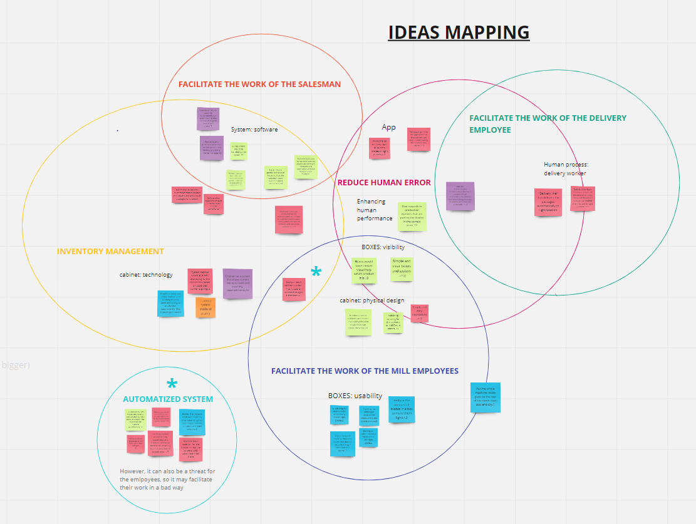

CONTEXT
Valmet produces paper machines that contain consumables. It is important for clients to have these consumables always available in their inventory. Without these spare parts, the paper machines cannot run, and this results in big losses for the clients of Valmet.
PROBLEM
There is no ready-made solution to track the consumables boxes for the whole journey of the box.
If Valmet could track the consumables from the production, all the way until they have been used in the machines, it would offer them a more reliable inventory management data.
TEAM & ROLE
The team was formed by 5 master students from the Minor program in International Design Business Management from Aalto University (Helsinki). During this 8-month project and alongside with the teammates, I performed as a UX researcher, service/lead designer, UI designer, team leader and project manager. I was sole in charge of the visualizations, the final presentation of the project and the motion graphics video.
METHODOLOGY
The journey was divided into 9 milestones and the timeline was based on design thinking methodology, including the double design approach.
We formulated our main research question together with two Valmet workers, experts in the topic; and the sub research questions.
We conducted a background research to get ourselves familiar with the topic and a field research with interviews on the stakeholders and users. We also researched current technologies and benchmarked other companies’ solutions.
For the conceptualization of the solution, different techniques/methods were used. The main ones are three design directions and two design sprints.
Design directions
- Journey map -> It is the result of our research and our concept ideation. The goal is to better understand what happens to the box throughout its lifecycle.
- Awareness map -> The goal was to be able to see the process and the issues from a different perspective. We found potential solutions for potential problems that we did not consider alongside the journey until that point.
- Root cause analysis -> This method was aimed to better explore and define the root cause of the possible issues that we defined under The journey of the box. We found out that all the problems have two possible roots for the issues: Technical errors or Human errors.
Design sprints
The goal of the design sprints was to test our hypothesis and get answers from users very quickly.
Representation of a 1-week design sprint (https://bit.ly/3g9h6HW)
Some of the main techniques used during the sprints were:
- Empathy map -> which helped us understand the different users of the system.
- Mapping of the ideas -> to group the ideas and visualize the different areas to work. 
THE SOLUTION
The solution of this project is an online-based inventory tracking system, that tracks consumables inventories by using different technologies that are connected to the system through the internet.
This means that each consumable shipment is attached with a tracking tag, or a combination of them. All mill sites are equipped with required sensors or other equipment, and those devices are used to send updated data to the server.
Besides the technical solution, an app or desktop site is needed to visualize the data, manage the consumables and communicate updates/errors to the different users (production workers, courier, salesman and mill workers).

CHALLENGES
For the team, myself included, this was the first big research project with a big client and real stakeholders that wanted a real solution. Since the first day this project has meant a jump to the deep sea of design thinking, lead/service UX and UXR.
Another important challenge was the remote nature of the project. Everything but the visits at Valmet and the POV workshop have been online. Managing the good environment and communication between the team, client and stakeholders was key for the success of the project.
Some things could not be changed, like strikes or Covid-19, but even though there were some errors and problem areas, we managed to design a perfectly fit solution for Valmet’s needs.
OUTCOME
The outcome of this project has been a report of all the learning and design solution that we develop during this period.
Even though we tried to include every good suggestion and wish for the solution and work as hard as we could during this time period, there are still things that need to be done or considered in the future. We have suggested how the design of the app could be and how everything could work inside it. However, the app, the website and the whole platform have to be built.
We have also defined how the system architecture should be formed in order to make the solution work automatically and without clear errors such as not being able to track the boxes. However, the system architecture needs to be built and contracts with technology providers need to be made.
LEARNINGS
This project has proved to be an excellent opportunity to improve my communication skills as the management of design team, especially online based. I could see the importance of a good environment and positive mood, which was key.
I could learn process and client management, as well as improve my research skills and lead knowledge. It has been also source of many new tools, techniques and methods.
And specially, I learned what things I could do better for the next deep research on a big scale. The better you research at the beginning, the more time you can save in the design phase.